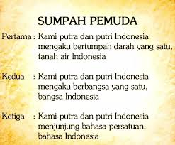

-
Beranda
-
Sejarah
SEJARAH SUMPAH PEMUDA
.jpg)
Sumpah Pemuda
Sumpah Pemuda merupakan momen bersejarah bagi bangsa Indonesia sekaligus menjadi tonggak dimulainya pergerakan organisasi pemuda. Makna Sumpah Pemuda adalah untuk membangkitkan kesadaran segenap rakyat Indonesia sebagai bangsa yang satu. Melalui Sumpah Pemuda, perjuangan rakyat tak lagi bersifat kedaerahan, tetapi sudah menjadi sebuah kesatuan kuat.
Lahirnya Sumpah Pemuda adalah dari hasil rapat para pemuda yakni pada Kongres Pemuda Kedua tanggal 28 Oktober 1928. Kala itu, para pemuda menyelenggarakan rapat atau kongres pemuda yang diusulkan oleh Perhimpunan Pelajar Pelajar Indonesia (PPPI) yakni organisasi pemuda yang beranggota pelajar dari seluruh Indonesia.
Adapun Kongres pemuda tersebut diselenggarakan selama tiga kali dan digelar pada tiga tempat yang berbeda hingga akhirnya melahirkan ikrar pemuda yang disebut Sumpah Pemuda. Ikrar Sumpah Pemuda dibacakan pada 28 Oktober 1928.
Kongres Pemuda dihadiri oleh kumpulan pemuda Indonesia dari Jong Java, Jong Sumatra (Pemuda Sumatra), Pemuda Indonesia Sekar Rukun, Jong Islamieten, Jong Bataksbond, Jong Celebes, Pemuda Kaum Betawi dan Perhimpunan Pelajar-Pelajar Indonesia.
Sejarah Lahirnya Sumpah Pemuda

Setelah Kongres Pemuda I selesai, beberapa pertemuan diadakan untuk membahas lebih lanjut terkait tindak lanjut dari Kongres Pemuda I. Setelah dua tahun, para pemuda yang dimotori PPPI (Persatuan Pemuda Pelajar Indonesia) mengadakan beberapa rapat yang dihadiri oleh perwakilan dari beberapa organisasi pemuda. Dari rapat tersebut menghasilkan keputusan bahwa Kongres Pemuda II akan dilaksanakan pada Oktober 1928 dengan susunan panitia sebagai berikut:
Ketua : Soegondo Djojopoespito (PPPI)
Wakil Ketua : R.M. Djoko Marsaid (Jong Java)
Sekretaris : Muhammad Yamin (Jong Sumatranen Bond)
Bendahara : Amir Sjarifoeddin (Jong Bataks Bond)
Pembantu I : Djohan Mohammad Tjai (Jong Islamieten Bond)
Pembantu II : R. Katjasoengkana (Pemoeda Indonesia)
Pembantu III : R.C.L. Senduk (Jong Celebes)
Pembantu IV : Johannes Leimena (Jong Ambon)
Pembantu V : Mohamad Rocjani Soe'oed (Pemoeda Kaoem Betawi)
Kongres Pemuda II dilangsungkan selama dua hari pada tanggal 27 dan 28 Oktober 1928 yang terbagi dalam tiga kali rapat yang masing-masing rapat dilaksanakan di gedung yang berbeda.
Rapat pertama dilaksanakan di Gedung Katholieke Jongenlingen Bond (KJB), Sabtu 27 Oktober 1928. Dalam rapat tersebut, Mohammad Yamin menguraikan tentang arti penting persatuan untuk kebangsaan. Menurutnya terdapat beberapa faktor yang bisa memperkuat persatuan Indonesia, yaitu persamaan kultur, bahasa, dan hukum adat.
Rapat kedua terjadi pada Minggu, 28 Oktober 1928 di Gedung Oost-Java Bioscoop membahas masalah pendidikan. Anak-anak harus dididik untuk memiliki karakter yang baik dan cinta tanah air. Anak-anak juga harus diberikan pelajaran merdeka tanpa melalui perintah ataupun pemaksaan. Harus ada keseimbangan antara pendidikan di sekolah dan di rumah.
Rapat ketiga dilaksanakan di gedung Indonesische Clubgebouw Kramat pada tanggal 28 Oktober 1928. Pada rapat ketiga dijelaskan pentingnya gerakan kepanduan bagi persatuan bangsa. Kepanduan tidak bisa dipisahkan dari pergerakan nasional.
Dalam rapat ketiga ini, sebelum rumusan hasil kongres dibacakan, terlebih dahulu diperdengarkan lagu ciptaan Wage Rudolf Supratman, yakni Indonesia Raya yang nantinya akan menjadi lagu kebangsaan Indonesia setelah merdeka. Setelahnya, putusan kongres dibacakan dan diikuti oleh seluruh peserta, sebuah putusan yang kita kenal sebagai Sumpah Pemuda.
RAPAT PERTAMA, GEDUNG KATHOLIEKE JONGENLINGEN BOND
Rapat pertama, Sabtu, 27 Oktober 1928 antara pukul 19.30-23.30, di Gedung Katholieke Jongenlingen Bond (KJB), Lapangan Banteng. Dalam sambutannya, Soegondo berharap kongres ini dapat memperkuat semangat persatuan dalam sanubari para pemuda. Acara dilanjutkan dengan uraian Moehammad Jamin tentang arti dan hubungan persatuan dengan pemuda. Menurutnya, ada lima faktor yang bisa memperkuat persatuan Indonesia yaitu sejarah, bahasa, hukum adat, pendidikan, dan kemauan.
RAPAT KEDUA, GEDUNG OOST-JAVA BIOSCOOP
Rapat kedua, Minggu, 28 Oktober 1928 dari pukul 08.00-12.00, di Gedung Oost-Java Bioscoop, membahas masalah pendidikan. Kedua pembicara, Poernomowoelan dan Sarmidi Mangoensarkoro, sependapat bahwa anak harus mendapat pendidikan kebangsaan, harus pula ada keseimbangan antara pendidikan di sekolah dan di rumah. Anak juga harus dididik secara demokratis.
RAPAT KETIGA, GEDUNG INDONESISCHE CLUBGEBOUW
Rapat ketiga, Masih di hari yang sama, tanggal 28 Oktober 1928, pukul 17.30-23.30 di Gedung Indonesische Clubgebouw Pada sesi berikutnya, Soenario menjelaskan pentingnya nasionalisme dan demokrasi selain gerakan kepanduan. Sedangkan Ramelan mengemukakan, gerakan kepanduan tidak bisa dipisahkan dari pergerakan nasional. Gerakan kepanduan sejak dini mendidik anak-anak disiplin dan mandiri, hal-hal yang dibutuhkan dalam perjuangan.
Sebelum kongres ditutup diperdengarkan lagu “Indonesia” karya Wage Rudolf Supratman. Lagu tersebut disambut dengan sangat meriah oleh peserta kongres. Kongres ditutup dengan mengumumkan rumusan hasil kongres. Oleh para pemuda yang hadir, rumusan itu diucapkan sebagai Sumpah Setia, berbunyi :

1.KAMI POETERA DAN POETERI INDONESIA,
MENGAKOE BERTOEMPAH DARAH JANG SATOE,
TANAH INDONESIA.
2.KAMI POETERA DAN POETERI INDONESIA,
MENGAKOE BERBANGSA JANG SATOE,
BANGSA INDONESIA
3.KAMI POETERA DAN POETERI INDONESIA,
MENDJOENDJOENG BAHASA PERSATOEAN,
BAHASA INDONESIA.
Momentum lahirnya Sumpah Pemuda pada 28 Oktober 1928 inilah yang kemudian diperingati sebagai Hari Sumpah Pemuda. Sejak itu pula, Hari Sumpah Pemuda diperingati setiap tanggal 28 Oktober.
Kita Bangsa Indonesia memperingati Hari Sumpah Pemuda setiap 28 Oktober. Adapun Hari Sumpah Pemuda pada hari ini Jumat (28/10/2022) merupakan peringatan ke-94. Menurut Surat Edaran (SE) Kemenpora tentang Panduan Peringatan Hari Sumpah Pemuda ke-94 Tahun 2022, tema Hari Sumpah Pemuda 2022 adalah "Bersatu Bangun Bangsa".
Makna Sumpah Pemuda
Tidak diragukan bahwa peristiwa Sumpah Pemuda memiliki arti penting bagi pergerakan nasional Indonesia ke depannya. Mengutip Mahda Ahdiyat dalam Gelombang Semangat Sumpah Pemuda (2021), masing-masing poin dalam Sumpah Pemuda memiliki makna sebagai berikut:
Sumpah Pemuda menyatukan para pemuda dan seluruh rakyat Indonesia untuk membela tumpah darah yang satu, yakni tanah air Indonesia. Dari Sabang sampai Merauke, dari Miangas sampai Rote. Meskipun terdiri atas ribuan pulau yang dipisahkan oleh laut, tapi pada hakikatnya adalah satu.
Sumpah Pemuda menyatukan para pemuda dan seluruh rakyat Indonesia untuk menjadi bangsa yang berdaulat dan bersatu yaitu bangsa Indonesia. Sebagai bangsa yang besar dan majemuk, bangsa Indonesia telah melalui berbagai terpaan zaman melalui persatuan.
Sumpah Pemuda menyatukan para pemuda dan seluruh rakyat Indonesia untuk berbahasa satu, yakni bahasa Indonesia. Bahasa Indonesia menjadi bahasa yang mempersatukan suku ras, dan etnis yang berbeda tanpa menghapuskan bahasa ibu masing-masing. Bahasa Indonesia juga selalu berkembang melalui penyerapan kosakata dari bahasa-bahasa daerah yang memperkaya kosakatanya.
Momen peringatan Sumpah Pemuda ini hendaknya dijadikan sebagai inspirasi bagi generasi muda Indonesia untuk bersatu dan memaknai perbedaan sebagai keunikan alih-alih untuk memecah dan menjadi sumber konflik. Dengan persatuan, generasi muda dapat membawa negeri ini ke arah yang lebih baik.